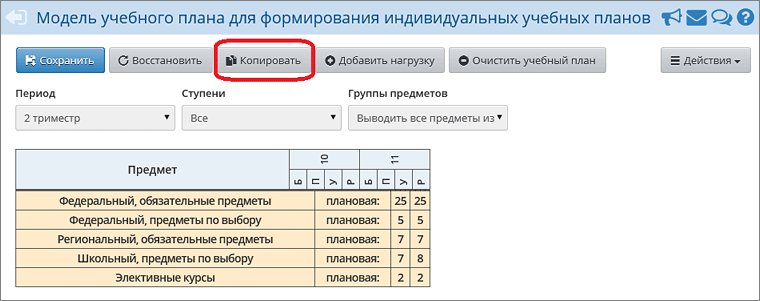
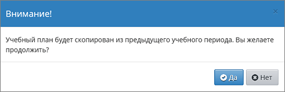

|
Копирование модели ИУП в следующий учебный период
|


| 1. | Копирование часов возможно как для КУП, так и для ИУП.
|
| 2. | Копирование часов учебного плана происходит из предыдущего учебного периода. Так, например, если выбрать 3-ю четверть и нажать кнопку «Копировать», то часы будут скопированы из 2-й четверти.
|
| 3. | Копирование часов УП возможно, только если УП на выбранный учебный период пуст. Таким образом, если были заполнены часы хотя бы по одному предмету или классу, и была нажата кнопка Сохранить, то копирование УП из предыдущего периода будет невозможно.
|